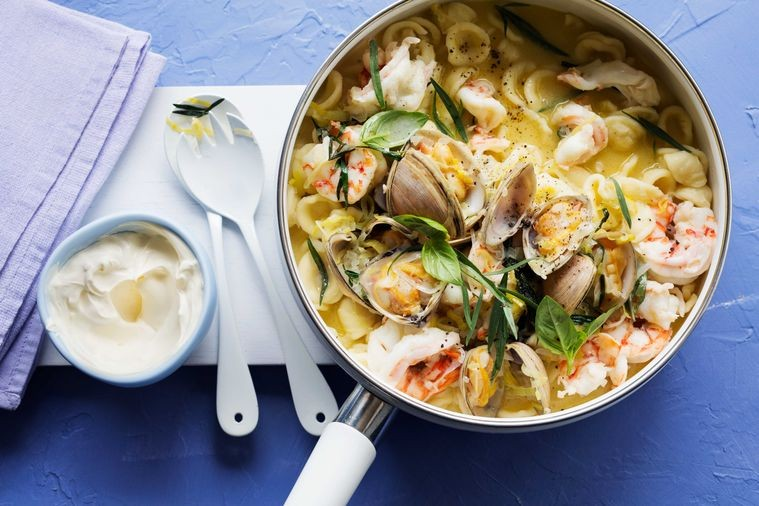

Prawn Nage

Want good seafood on the table in the shortest amount of time? Shannon Bennett's 15-minute prawn nage will get you sorted.
Ingredients
- 1/4 cup (60ml) extra virgin olive oil
- 1 onion, very finely chopped
- 1 leek, thinly sliced
- 2 garlic cloves, sliced
- 1 cup (250ml) white wine
- 1 cup (250ml) fish stock
- 20 (about 2kg) tiger prawns, peeled, deveined
- 500g pot-ready clams
- Juice of 1 lemon
- 100g unsalted butter
- 1/2 cup basil leaves, thinly sliced, plus extra whole leaves to serve
- 1/2 cup tarragon leaves, plus extra to serve
- 400g orecchiette pasta, cooked according to packet instructions
- Creme fraiche, to serve
Steps
- Heat the oil in a large saucepan over medium heat.
- Add onion, leek and garlic, and cook, stirring, for 3-4 minutes until softened.
- Add wine and stock, increase heat to high and bring to the boil.
- Add the seafood, then cover and cook for 4 minutes or until almost cooked.
- Add lemon juice, butter and herbs, and cook, stirring until butter has melted. Season.
- Add the pasta you already cooked per package instructions for a further 1 minute to warm through.
- Divide among serving dishes, top with extra herbs and serve with creme fraiche.
Credit to Chef Shannon Bennet!